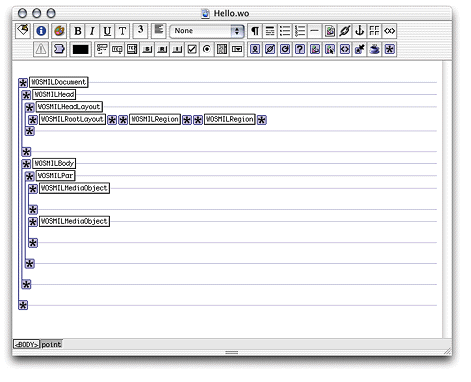
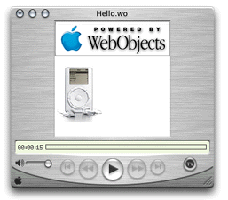

One of the features that makes SMIL presentations interesting
is the ability to define when a media object gets displayed. For
instance, you can have an image displayed five seconds after the
presentation is started and have another media object appear two
seconds after the first image appears. This section shows you how
to do just that. You'll modify the Hello.wo component
of the Smile project created in "Creating a Static Presentation".
Hello.wo in
WebObjects Builder if it's not already open.75 for
the top binding.0 for the left binding.100 for the height binding.100 for the width binding."meet" for
the fit binding."Region2" for
the regionID binding.To make the media
object appear five seconds after the presentation starts, you have
to add the begin binding
to the element.
binding1.begin and
enter "5s" as
its value.dur and
set its value to "10s"."Region2" for
the regionID binding."img" for
the mediaObjectType binding.Now Hello.wo should
look like Figure 3-3.
Figure 3-3 Hello.wo component after adding second WOSMILMediaObject element
Save Hello.wo.
If the Smile application is not running, start it. In QuickTime
Player, connect to the application using the appropriate URL, which
should similar to the following one:
http://<host>:<port>/cgi-bin/WebObjects/Smile.woa/wo/Hello.wo
Click Play in QuickTime Player. The image appears after five seconds have passed.
Now you'll add a media object whose display is tied to the appearance of another media object instead of the beginning of the presentation.
elementID binding
to the second WOSMILMediaObject element and set its value to "MediaObject2".begin binding and set
its value to "id(MediaObject2)(2s)".
This makes this WOSMILMediaObject appear two seconds after the second
WOSMILMediaObject (with "MediaObject2" as
its elementID) is displayed.dur binding
and set its value to "8s".regionID binding
to "Region1"."img".filename to
the second image file you added to the project.Save Hello.wo and
reconnect to the application using QuickTime Player. After playing
the presentation, you should see a window similar to the one in Figure 3-4.
Figure 3-4 Hello SMIL presentation with two images
This is the code your SMIL viewer receives when you connect to the application:
<smil id="0.0">
<head id="0.0.1.0.0">
<layout id="0.0.1.0.0.1.0.0">
<root-layout background-color="#FFFFFF" skip-content="true"
width="200" height="200" id="0.0.1.0.0.1.0.0.1.0.0">
</root-layout>
<region z-index="0" skip-content="true" width="200" height="75"
left="0" fit="meet" top="0" id="Region1">
</region>
<region z-index="0" skip-content="true" width="100"
height="100" left="0" fit="meet" top="75" id="Region2">
</region>
</layout>
</head>
<body id="0.0.1.1.0">
<par region="Region1" id="0.0.1.1.0.1.0.0">
<text dur="5s" src="http://ebruce:1234/cgi-bin/WebObjects/Smile.woa/ wr?wodata=%2FUsers%2Fernest%2FWebObjects%2FProjects%2FSMIL%2FSmile%2Fhello.txt" region="Region1" id="0.0.1.1.0.1.0.0.1.0.0">
</text>
<img dur="10s" src="http://ebruce:1234/cgi-bin/WebObjects/Smile.woa/ wr?wodata=%2FUsers%2Fernest%2FWebObjects%2FProjects%2FSMIL%2FSmile%2Fipod.jpg" region="Region2" id="MediaObject2" begin="5s">
</img>
<img dur="8s" src="http://ebruce:1234/cgi-bin/WebObjects/Smile.woa/ wr?wodata=%2FUsers%2Fernest%2FWebObjects%2FProjects%2FSMIL%2FSmile%2Fpoweredbywebo bjects.gif" region="Region1" id="0.0.1.1.0.1.0.0.1.2.0" begin="id(MediaObject2)(2s)">
</img>
</par>
</body>
</smil>
Notice that the id attribute
of the second media object is now "MediaObject2" instead
of the one generated by WebObjects.